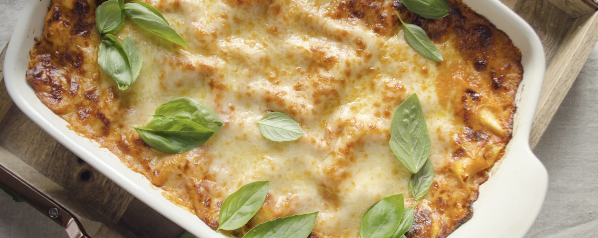

The Best Healthy Turkey Lasagna You’ll Ever Eat
This healthy turkey lasagna recipe is made literally from scratch with fresh ingredients, lean ground turkey breast, mozzarella, Béchamel sauce and a touch of parmesan. Perfect for serving crowds, family-style dinners, or freezing for later!
Ingredients
For the Tomato sauce:
- 2 tbsp extra virgin olive oil
- ½ chopped red onion
- 1020 ml 365 Vodka sauce
- 1 ½ pounds Mary’s Organic Ground Turkey Breast 98% lean
- 1 Tsp red wine
- Salt
- Pepper
- 2 tbsp concentrated tomato paste
- 200 ml chicken stock
For the Béchamel sauce:
- 100 g unsalted butter
- 80 g flour or more until thick
- 1 liter whole milk
- 100 g grated Parmesan cheese
- ¼ nutmeg
- Pinch of salt and pepper
To finish:
- 500 g lasagna sheets
- 1 ball Mozzarella
- grated Parmesan cheese
Steps
- For the Tomato sauce, in a large pan, heat the olive oil to saute the onion until softened.
- Season with salt and pepper.
- Add the meat and brown all over.
- Increase the heat, add the wine and allow to evaporate.
- Dilute the tomato puree in a little of the stock and stir into the meat.
- Add the Vodka sauce.
- Lower the heat, cover with a lid and gently simmer, stirring from time to time.
- Reduce the heat to low, cover with a lid and cook on a gentle heat for 2 hours, checking and adding a little extra stock from time to time to avoid the sauce from drying out.
- Remove from the heat.
- For the Béchamel sauce, melt the butter in a small pan on a medium heat, stir in the flour with either a wooden spoon or small hand whisk (this will avoid lumps from forming) to form a paste and stir in a little of the milk.
- Add the milk, stirring all the time until it begins to thicken to a creamy consistency. Remove from the heat, add salt and pepper and stir in the grated parmesan cheese.
- Line a Pyrex deep baking tray with a little tomato sauce, arrange sheets of lasagna over followed by tomato sauce, dots of mozzarella and Béchamel sauce and a sprinkling of grated parmesan.
- Continue to make layers like this until you have finished all the ingredients, ending with a topping of white sauce. Hold back some of the tomato sauce to dot over the top and sprinkle with parmesan cheese.
- Bake lasagna covered with foil at 350°F for 30 minutes, then uncover and bake for 15 minutes until the top is golden.
- Allow to rest for a couple of minutes before serving.